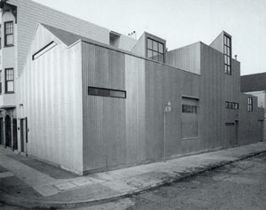

...
In the next three months, there are six events planned. Here they
are:
&+} Capp Street Project . . .

65 Capp Street
San Francisco, CA 94103
Founded in San Francisco in 1983 by Ann Hatch, Capp Street Project was
the first visual arts residency in the United States dedicated solely to
the creation and presentation of new art installations. The organization
took its name from the house at 65 Capp Street designed by the artist
David Ireland.
Since its inception, Capp Street Project has given more than 100 local,
national, and international artists the opportunity to create new work
through its residency and public exhibition programs. Capp Street
Project became part of the Wattis Institute in 1998.
A list of Capp Street Artists is available here.
The Capp Street Project Archive is housed in the Meyer Library on the
Oakland campus of California College of the Arts.
http://libraries.cca.edu/capp/index
The archive documents the process, intention, and realization of
installations and temporary projects sponsored by Capp Street Project
since 1983. Under the auspices of the college's libraries, the archive
preserves and organizes materials relating to the projects and makes
these materials available for study and research. Through the archive's
website, present-day audiences may view projects as they once existed,
learn about the artists who created them, and experience these works
anew.